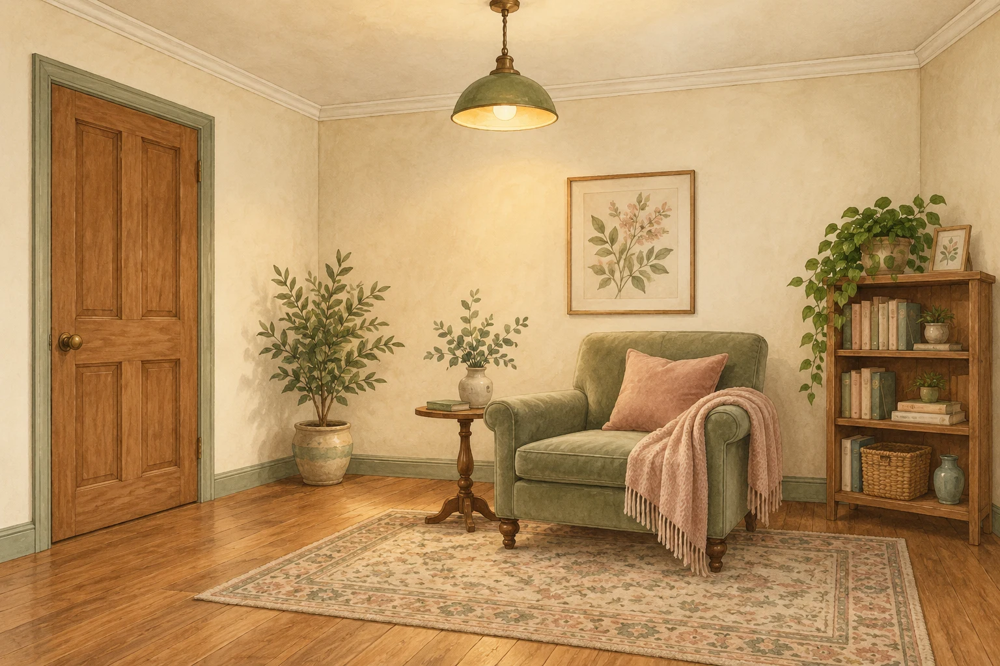

Presentation
in · at · on (places 1)
A · in
in a room
in a shop
in a car
in the water
in a garden
in a town
in the city centre
in Brazil
- 'Where's David?' 'In the kitchen. / In the garden. / In London.'
- What's in that box / in that bag / in that cupboard?
- Rachel works in a shop / in a bank / in a factory.
- I went for a swim in the river / in the pool / in the sea.
- Milan is in the north of Italy. Naples is in the south.
- I live in a big city, but I'd like to live in the country.
B · at
at the bus stop
at the door
at the traffic lights
at her desk
- There's somebody at the bus stop / at the door.
- The car is waiting at the traffic lights.
- Vicky is working at her desk.
at the top / at the bottom / at the end (of …):
- Write your name at the top of the page.
- My house is at the end of the street.
at the top (of the page)
topbottom
at the bottom (of the page)
C · on
on a shelf
on a plate
on a balcony
on the floor
etc.

on a wall
on a door
on the ceiling
etc.
- There are some books on the shelf and some pictures on the wall.
- There are a lot of apples on those trees.
- Don't sit on the grass. It's wet.
- There is a stamp on the envelope.
on a horse / on a bicycle / on a motorbike:
- Who is that man on the motorbike?
→ the top / the bottom — Unit 70 · at/on/in (time) — Unit 103 · in/at/on (places) — Unit 107